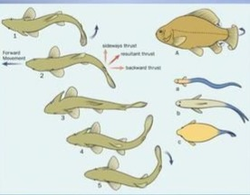
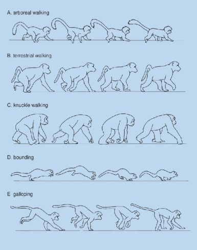
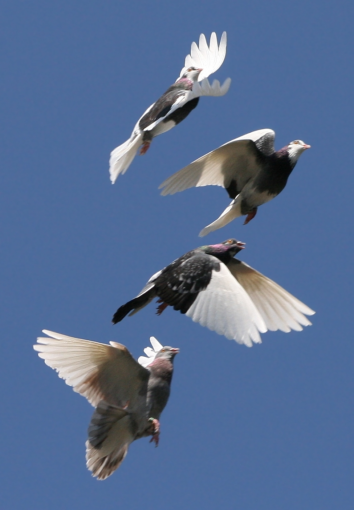

Locomotion refers to an animal's ability to move from one place to another. It is a fundamental activity for survival, enabling animals to find food, escape predators, seek mates, and explore new environments. All forms of locomotion require energy and involve the interaction of an animal's body with its surrounding environment.
Basic Principles of Locomotion
Regardless of the environment (water, land, or air), certain physical principles apply to all forms of animal locomotion:
- Overcoming Gravity: Animals on land must support their body weight against the pull of gravity.
- Overcoming Resistance/Friction: Movement is opposed by forces from the environment (water, air, ground). Animals must generate thrust to overcome this resistance.
- Generating Force: Muscles contract to produce the forces needed for movement. These forces are applied against the environment.
- Energy Expenditure: All movement requires energy, primarily derived from ATP (Adenosine Triphosphate) produced through cellular respiration.
Types of Locomotion and Adaptations
Animals have evolved diverse methods of locomotion, each highly adapted to their specific habitats:
1. Swimming (Aquatic Locomotion)
Movement through water. Water provides buoyancy, reducing the effect of gravity, but also presents significant resistance.
- Adaptations:
- Streamlined Body Shape: Reduces drag (resistance) in water (e.g., fish, dolphins).
- Fins/Paddles: Used for propulsion and steering (e.g., fish tails, flippers of seals).
- Undulation: Wavelike body movements for propulsion (e.g., snakes in water, eels).

2. Walking/Running (Terrestrial Locomotion)
Movement on land. Requires supporting body weight against gravity and generating thrust against the ground.
- Adaptations:
- Limbs (Legs): Provide support and leverage for pushing against the ground.
- Joints: Allow for flexibility and controlled movement.
- Strong Musculature: Especially in the legs and core, to generate powerful contractions.
- Gaits: Different patterns of limb movement (e.g., walk, trot, gallop) to optimize speed, efficiency, or stability.

3. Flying (Aerial Locomotion)
Movement through the air. Requires generating lift to counteract gravity and thrust to overcome air resistance.
- Adaptations:
- Wings: Specialized appendages to generate lift and thrust (e.g., birds, bats, insects).
- Lightweight Skeleton: Hollow bones (birds) or chitinous exoskeletons (insects) to reduce body mass.
- Powerful Flight Muscles: Large chest muscles (birds) for wing movement.
- Aerodynamic Body Shape: Streamlined to reduce drag.

4. Crawling/Slithering
Movement without limbs or with many small limbs, often involving body undulation or peristaltic movements.
- Adaptations:
- Muscular Undulation: Wavelike contractions along the body create friction points (e.g., snakes, caterpillars).
- Setae/Bristles: Small hair-like structures that grip surfaces (e.g., earthworms).
- Mucus Secretion: Reduces friction and aids movement (e.g., snails).
5. Jumping/Hopping
A specialized form of terrestrial locomotion involving powerful, explosive pushes off the ground.
- Adaptations:
- Long, Powerful Hind Limbs: Adapted for generating large forces (e.g., frogs, kangaroos).
- Elastic Tendons/Ligaments: Store and release elastic energy, making jumps more efficient.
- Strong Leg Musculature: For rapid contraction.
Key Anatomical Structures Involved in Locomotion
All forms of locomotion rely on the coordinated action of several body systems:
-
Muscles:
The primary movers. Muscles contract (shorten) to pull on bones or other body parts, generating force. They typically work in antagonistic pairs (e.g., biceps and triceps), where one contracts while the other relaxes.
-
Skeletal System:
Provides the rigid framework (bones, exoskeleton, hydrostatic skeleton) that muscles pull against. Bones act as levers, amplifying movement. Joints allow for specific ranges of motion.
-
Nervous System:
Coordinates muscle contractions, sensory input (e.g., balance, vision), and overall movement patterns. It sends signals from the brain and spinal cord to muscles.
In summary, animal locomotion is a complex interplay of physical forces, anatomical structures, and physiological processes, all finely tuned through evolution to enable organisms to thrive in their diverse environments.
Written by Kasiban Parthipan